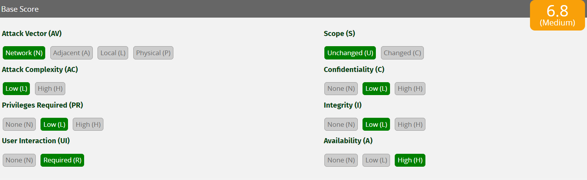
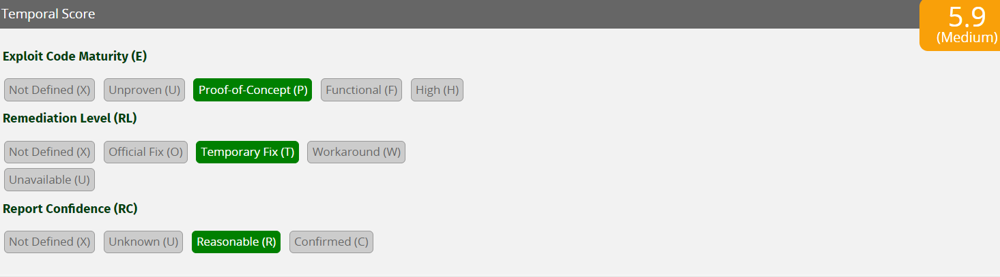
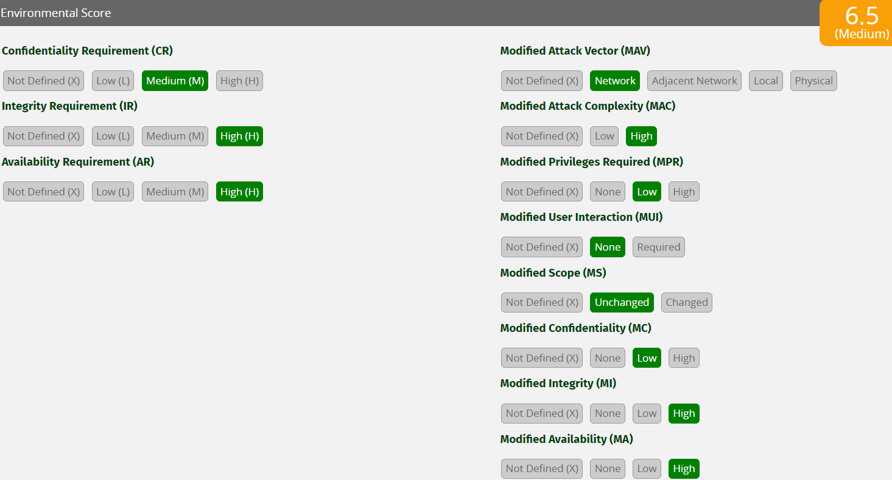

CVSS
Step 1: Collection of Metrics Sets
Base:
- Attack Vector (AV): [N,A,L,P], Network (N), Adjacent (A), Local (L), Physical (P)
- Attack Complexity (AC): [L,H], Low (L), High (H)
- Privileges Required (PR): [N,L,H], None (N), Low (L), High (H)
- User Interaction (UI): [N,R], None (N), Required (R)
- Scope (S): [U,C], Unchanged (U), Changed (C)
- Confidentiality (C): [H,L,N], High (H), Low (L), None (N)
- Integrity (I): [H,L,N], High (H), Low (L), None (N)
- Availability (A): [H,L,N], High (H), Low (L), None (N)
Temporal:
- Exploit Code Maturity (E): [X,H,F,P,U], Not Defined (X), High (H), Functional (F), Proof-of-Concept (P), Unproven (U)
- Remediation Level (RL): [X,U,W,T,O], Not Defined (X), Unavailable (U), Workaround (W), Temporary Fix (T), Official Fix (O)
- Report Confidence (RC): [X,C,R,U], Not Defined (X), Confirmed (C), Reasonable (R), Unknown (U)
Environmental:
- Confidentiality Requirement (CR): [X,H,M,L], Not Defined (X), High (H), Medium (M), Low (L)
- Integrity Requirement (IR): [X,H,M,L], Not Defined (X), High (H), Medium (M), Low (L)
- Availability Requirement (AR): [X,H,M,L], Not Defined (X), High (H), Medium (M), Low (L)
- Modified Attack Vector (MAV): [X,N,A,L,P], Not Defined (X), Network (N), Adjacent (A), Local (L), Physical (P)
- Modified Attack Complexity (MAC): [X,L,H], Not Defined (X), Low (L), High (H)
- Modified Privileges Required (MPR): [X,N,L,H], Not Defined (X), None (N), Low (L), High (H)
- Modified User Interaction (MUI): [X,N,R], Not Defined (X), None (N), Required (R)
- Modified Scope (MS): [X,U,C], Not Defined (X), Unchanged (U), Changed (C)
- Modified Confidentiality (MC): [X,N,L,H], Not Defined (X), High (H), Low (L), None (N)
- Modified Integrity (MI): [X,N,L,H], Not Defined (X), High (H), Low (L), None (N)
- Modified Availability (MA): [X,N,L,H], Not Defined (X), High (H), Low (L), None (N)
Step 2: Set and Sort the Metrics
Base:
- Attack Vector (AV)
- Attack Complexity (AC)
- Privileges Required (PR)
- User Interaction (UI)
- Scope (S)
- Confidentiality (C)
- Integrity (I)
- Availability (A)
Temporal:
- Exploit Code Maturity (E)
- Remediation Level (RL)
- Report Confidence (RC)
Environmental:
- Confidentiality Requirement (CR)
- Integrity Requirement (IR)
- Availability Requirement (AR)
- Modified Attack Vector (MAV)
- Modified Attack Complexity (MAC)
- Modified Privileges Required (MPR)
- Modified User Interaction (MUI)
- Modified Scope (MS)
- Modified Confidentiality (MC)
- Modified Integrity (MI)
- Modified Availability (MA)
Step 3: Allocation of CVSS Metrics
Base:
- Attack Vector (AV): Network (N)
- Attack Complexity (AC): Low (L)
- Privileges Required (PR): Low (L)
- User Interaction (UI): Required (R)
- Scope (S): Unchanged (U)
- Confidentiality (C): Low (L)
- Integrity (I): Low (L)
- Availability (A): High (H)
Temporal:
- Exploit Code Maturity (E): Proof of Concept (P)
- Remediation Level (RL): Temporary Fix (T)
- Report Confidence (RC): Reasonable (R)
Environmental:
- Confidentiality Requirement (CR): Medium (M)
- Integrity Requirement (IR): High (H)
- Availability Requirement (AR): High (H)
- Modified Attack Vector (MAV): Network (N)
- Modified Attack Complexity (MAC): High (H)
- Modified Privileges Required (MPR): Low (L)
- Modified User Interaction (MUI): None (N)
- Modified Scope (MS): Unchanged (U)
- Modified Confidentiality (MC): Low (L)
- Modified Integrity (MI): High (H)
- Modified Availability (MA): High (H)
Step 4: Calculating CVSS Scores
- Attack Vector (AV): Network (N) - 0.85
- Attack Complexity (AC): Low (L) - 0.77
- Privileges Required (PR): Low (L) - 0.62
- User Interaction (UI): Required (R) - 0.62
- Scope (S): Unchanged (U)
- Confidentiality (C): Low (L) - 0.22
- Integrity (I): Low (L) - 0.22
- Availability (A): High (H) - 0.56
Temporal:
- Exploit Code Maturity (E): Proof of Concept (P) - 0.94
- Remediation Level (RL): Temporary Fix (T) - 0.96
- Report Confidence (RC): Reasonable (R) - 0.96
Environmental:
- Confidentiality Requirement (CR): Medium (M) - 1
- Integrity Requirement (IR): High (H) - 1.5
- Availability Requirement (AR): High (H) - 1.5
- Modified Attack Vector (MAV): Network (N) - 0.85
- Modified Attack Complexity (MAC): High (H) - 0.44
- Modified Privileges Required (MPR): Low (L) - 0.62
- Modified User Interaction (MUI): None (N) - 0.85
- Modified Scope (MS): Unchanged (U)
- Modified Confidentiality (MC): Low (L) - 0.22
- Modified Integrity (MI): High (H) - 0.56
- Modified Availability (MA): High (H) - 0.56
Base Metrics Equations
Formula:
ISS = 1 - [ (1 - Confidentiality) × (1 - Integrity) × (1 - Availability) ][1]
Impact[1] =
- If Scope is Unchanged: 6.42 × ISS
- If Scope is Changed: 7.52 × (ISS - 0.029) - 3.25 × (ISS - 0.02)^15
Exploitability = 8.22 × AttackVector × AttackComplexity × PrivilegesRequired × UserInteraction
BaseScore[1] =
- If Impact ≤ 0: 0
- If Scope is Unchanged: Roundup (Minimum [(Impact + Exploitability), 10])
- If Scope is Changed: Roundup (Minimum [1.08 × (Impact + Exploitability), 10])
The Specific Scores are as follows:
ISS = 1 - [ (1 - 0.22) × (1 - 0.22) × (1 - 0.56) ] = 0.732304
Impact = Scope is Unchanged = 6.42 × ISS = 4.70139168
Exploitability = 8.22 × 0.85 × 0.77 × 0.62 × 0.62 = 2.06806816
BaseScore = Roundup (Minimum [(Impact + Exploitability), 10]) = Roundup(6.769) = 6.8

Temporal Metrics Equations
Formula:
TemporalScore = Roundup (BaseScore × ExploitCodeMaturity × RemediationLevel × ReportConfidence)[1]
The Specific Scores are as follows:
TemporalScore = Roundup (6.8 × 0.94 × 0.96 × 0.96) = Roundup (5.89) = 5.9

Environmental Metrics Equations
Formula:
MISS = Minimum ( 1 - [ (1 - ConfidentialityRequirement × ModifiedConfidentiality) × (1 - IntegrityRequirement × ModifiedIntegrity) × (1 - AvailabilityRequirement × ModifiedAvailability) ], 0.915)[1]
ModifiedImpact =
If ModifiedScope is Unchanged 6.42 × MISS
If ModifiedScope is Changed 7.52 × (MISS - 0.029) - 3.25 × (MISS × 0.9731 - 0.02)13
ModifiedExploitability = 8.22 × ModifiedAttackVector × ModifiedAttackComplexity × ModifiedPrivilegesRequired × ModifiedUserInteraction[1]
ModifiedImpact =
If ModifiedScope is Unchanged 6.42 × MISS
If ModifiedScope is Changed 7.52 × (MISS - 0.029) - 3.25 × (MISS × 0.9731 - 0.02)13
ModifiedExploitability = 8.22 × ModifiedAttackVector × ModifiedAttackComplexity × ModifiedPrivilegesRequired × ModifiedUserInteraction[1]
The Specific Scores are as follows:
MISS = Minimum ( 1 - [ (1 - 1 ×0.22 ) × (1 - 1.5 × 0.56 ) × (1 - 1.5 × 0.56 ) ], 0.915) = Minimum ( 1 - 0.019968, 0.915 ) = Minimum ( 0.980032, 0.915 ) = 0.915
ModifiedImpact = 6.42 × MISS =5.8743
ModifiedExploitability = 8.22 × 0.85 × 0.44 × 0.62 × 0.85 = 1.62014556
EnvironmentalScore = Roundup ( Roundup [Minimum ([5.8743 + 1.62014556], 10) ] × 0.94 × 0.96 × 0.96 ) = Roundup (7.5 × 0.94 × 0.96 × 0.96) = 6.5

[1] CVSS v3.1 specification document, Adam Maris et al. 2015. Retrieved from http://www.first.org/cvss/v3.1/specification-document.